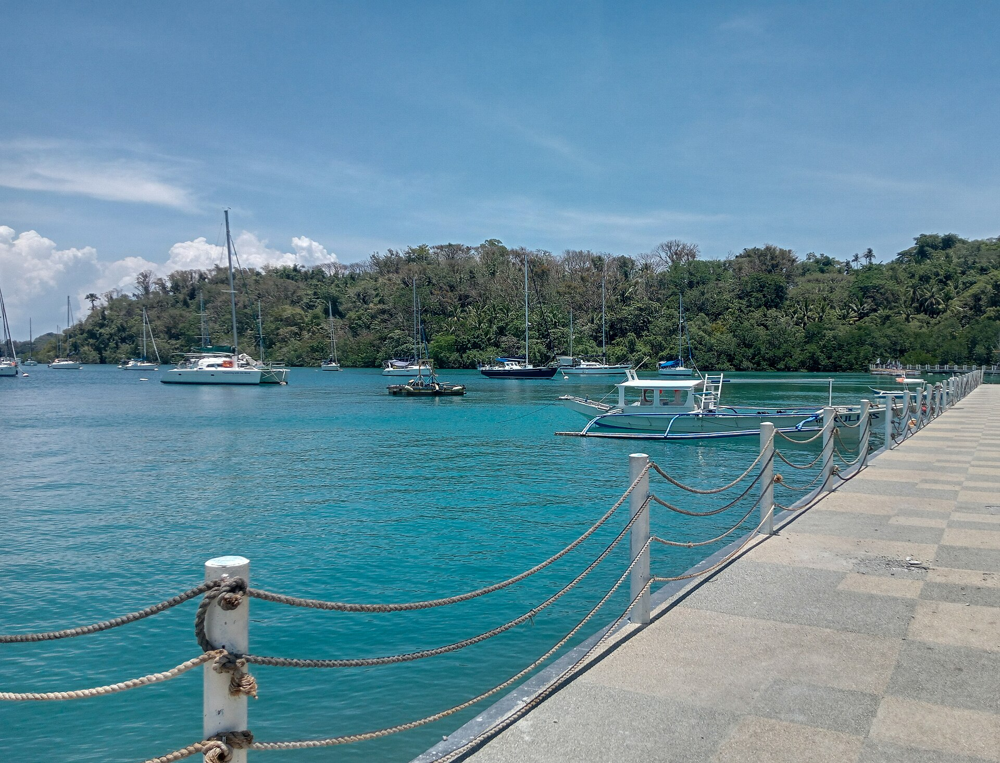

ACKNOWLEDGEMENTS
Photo and content credits
Sources and licenses
Travel facts, fares and fees are summarized from the Wikivoyage guides for Puerto Galera and White Beach (Mindoro), available under the Creative Commons Attribution ShareAlike license. All photos are from Wikimedia Commons and are used under the licenses listed below.
| File | Author | License | Source |
|---|---|---|---|
| PH - Puerto Galera - White Beach - from sea 1.jpg | Eugene Alvin Villar (seav) | CC BY-SA 4.0 | Wikimedia Commons |
| PH - Puerto Galera - White Beach - sunset 1.jpg | Eugene Alvin Villar (seav) | CC BY-SA 4.0 | Wikimedia Commons |
| Puerto Galera - Sabang beach - panoramio.jpg | Andrea Albini | CC BY-SA 3.0 | Wikimedia Commons |
| Tamaraw Falls, near Puerto Galera, Philippines.jpg | Ken Eckert | CC BY-SA 4.0 | Wikimedia Commons |
| Muelle Port, Puerto Galera, Oriental Mindoro, April 2023.jpg | Ralff Nestor Nacor | CC BY-SA 4.0 | Wikimedia Commons |
| Balatero Port aerial photo (images/balatero.jpg) | Mangyan Travel Vlog | Supplied by the project team | Source not stated |
| Sabang shoreline photo (images/sabang.jpg) | Not stated | Supplied by the project team | Source not stated |
| Puerto Galera underwater (2).jpg | Firth McEachern | CC BY-SA 4.0 | Wikimedia Commons |
| Puerto Galera underwater (5).jpg | Firth McEachern | CC BY-SA 4.0 | Wikimedia Commons |
| Puerto Galera Beach (Philippines).jpg | Paolobon140 | CC BY-SA 4.0 | Wikimedia Commons |
| Varadero Bay, Puerto Galera, Oriental Mindoro.jpg | Ralff Nestor Nacor | CC BY-SA 4.0 | Wikimedia Commons |
| Puerto Galera Church.jpg | Elmer B. Domingo | CC BY-SA 4.0 | Wikimedia Commons |


Emergency and office contact numbers: Puerto Galera PG Pass website (Tourism Office) and the Travel Oriental Mindoro directory (Coast Guard and Police); confirm before relying on them. Map by OpenStreetMap contributors. Fonts: Cormorant Garamond and Poppins from Google Fonts. CC BY SA 4.0 and CC BY SA 3.0 are available at creativecommons.org.